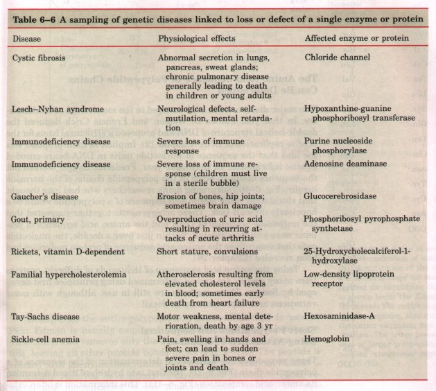
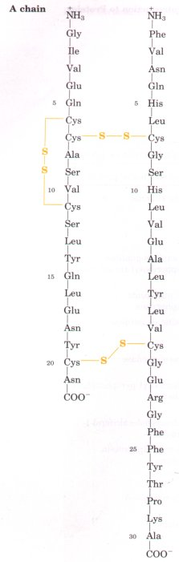
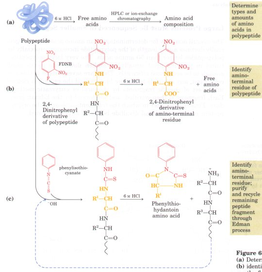
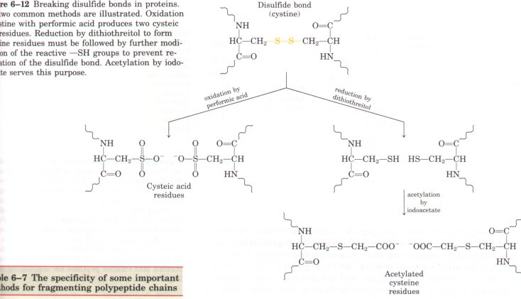
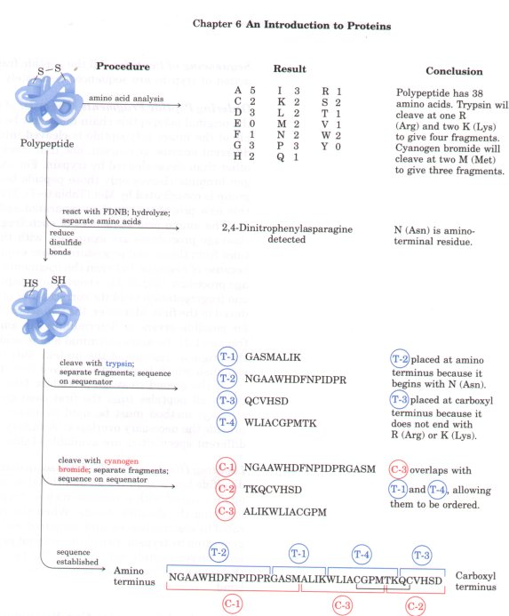
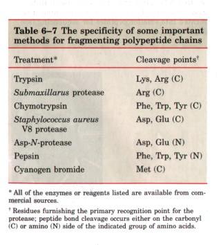

All proteins in all species, regardless of their function or biological activity, are built from the same set of 20 amino acids (Chapter 5). What is it, then, that makes one protein an enzyme, another a hormone, another a structural protein, and still another an antibody? How do they differ chemically? Quite simply, proteins differ from each other because each has a distinctive number and sequence of amino acid residues. The amino acids are the alphabet of protein structure; they can be arranged in an almost infinite number of sequences to make an almost infinite number of different proteins. A specific sequence of amino acids folds up into a unique three-dimensional structure, and this structure in turn determines the function of the protein.
The amino acid sequence of a protein, or its primary structure, can be very informative to a biochemist. No other property so clearly distinguishes one protein from another. This now becomes the focus of the remainder of the chapter. We first consider empirical clues that amino acid sequence and protein function are closely linked, then describe how amino acid sequence is determined, and finally outline the many uses to which this information can be put.
The bacterium E. coli produces about 3,000 different proteins. A human being produces 50,000 to 100,000 different proteins. In both cases, each separate type of protein has a unique structure and this structure confers a unique function. Each separate type of protein also has a unique amino acid sequence. Intuition suggests that the amino acid sequence must play a fundamental role in determining the threedimensional structure of the protein, and ultimately its function, but is this expectation correct? A quick survey of proteins and how they vary in amino acid sequence provides a number of empirical clues that help substantiate the important relationship between amino acid sequence and biological function. First, as we have already noted, proteins with different functions always have different amino acid sequences. Second, more than 1,400 human genetic diseases have been traced to the production of defective proteins (Table 6-6). Perhaps a third of these proteins are defective because of a single change in the amino acid sequence; hence, if the primary structure is altered, the function of the protein may also be changed. Finally, on comparing proteins with similar functions from different species, we find that these proteins often have similar amino acid sequences. An extreme case is ubiquitin, a 76 amino acid protein involved in regulating the degradation of other proteins. The amino acid sequence of ubiquitin is identical in species as disparate as fruit flies and humans.
Is the amino acid sequence absolutely fixed, or invariant, for a particular protein? No; some flexibility is possible. An estimated 20 to 30% of the proteins in humans are polymorphic, having amino acid sequence variants in the human population. Many of these variations in sequence have little or no effect on the function of the protein. Furthermore, proteins that carry out a broadly similar function in distantly related species often differ greatly in overall size and amino acid sequence. An example is DNA polymerase, the primary enzyme involved in DNA synthesis. The DNA polymerase of a bacterium is very different in much of its sequence from that of a mouse cell.

The amino acid sequence of a protein is inextricably linked to its function. Proteins often contain crucial substructures within their amino acid sequence that are essential to their biological functions. The amino acid sequence in other regions might vary considerably without affecting these functions. The fraction of the sequence that is critical varies from protein to protein, complicating the task of relating sequence to structure, and structure to function. Before we can consider this problem further, however, we must examine how sequence information is obtained.
| Two major discoveries in 1953 ushered in
the modern era of biochemistry. In that year James D.
Watson and Francis Crick deduced the double-helical
structure of DNA and proposed a structural basis for the
precise replication of DNA (Chapter 12). Implicit in
their proposal was the idea that the sequence of
nucleotide units in DNA bears encoded genetic
information. In that same year, Frederick Sanger worked
out the sequence of amino acids in the polypeptide chains
of the hormone insulin (Fig. 6-10), surprising many
researchers who had long thought that elucidation of the
amino acid sequence of a polypeptide would be a
hopelessly difficult task. These achievements together
suggested that the nucleotide sequence of DNA and the
amino acid sequence of proteins were somehow related.
Within just over a decade, the nucleotide code that
determines the amino acid sequence of protein molecules
had been revealed (Chapter 26) Today the amino acid sequences of thousands of different proteins from many species are known, determined using principles first developed by Sanger. These methods are still in use, although with many variations and improvements in detail. |
 Figure 6-10 The amino acid sequence of the two chains of bovine insulin, which are joined by disulfide cross-linkages. The A chain is identical in human, pig, dog, rabbit, and sperm whale insulins. The B chains of the cow, pig, dog, goat, and horse are identical. Such identities between similar proteins of different species are discussed later in this chapter. |
Three procedures are used in the determination of the sequence of a polypeptide chain (Fig. 6-11). The first is to hydrolyze it and determine its amino acid composition (Fig. 6-lla). This information is often valuable in later steps, and can also be useful in itsel?Because amino acid composition differs from one protein to the next, it can serve as a kind of fingerprint. It can be used, for example, to help determine whether proteins isolated by different laboratories are the same or different.
Often, the next step is to identify the amino-terminal amino acid residue (Fig. 6-llb). For this purpose Sanger developed the reagent 1-fluoro-2,4-dinitrobenzene (FDNB; see Fig. 5-14). Other reagents used to label the amino-terminal residue are dansyl chloride and dabsyl chloride (see Figs. 5-14 and 5-18). The dansyl derivative is highly fluorescent and can be detected and measured in much lower concentrations than dinitrophenyl derivatives. The dabsyl derivative is intensely colored and also provides greater sensitivity than the dinitrophenyl compounds. These methods destroy the polypeptide and their utility is therefore limited to identification of the amino-terminal residue.

Figure 6-11 Steps in sequencing a polypeptide. (a) Determination of amino acid composition and (b) identification of the amino-terminal residue are the first steps for many polypeptides. Sanger's method for identifying the amino-terminal residue is shown here. The Edman degradation procedure (c) reveals the entire sequence of a peptide. For shorter peptides, this method alone readily yields the entire sequence, and steps (a) and (b) are often omitted. The latter procedures are useful in the case of larger polypeptides, which are often fragmented into smaller peptides for sequencing (see Fig. 6-13).
To sequence the entire polypeptide, a chemical method devised by Pehr Edman is usually employed. The Edman degradation procedure labels and removes only the amino-terminal residue from a peptide, leaving all other peptide bonds intact (Fig. 6-llc). The peptide is reacted with phenylisothiocyanate, and the amino-terminal residue is ultimately removed as a phenylthiohydantoin derivative. After removal and identifcation of the amino-terminal residue, the new amino-terminal residue so exposed can be labeled, removed, and identified by repeating the same series of reactions. This procedure is repeated until the entire sequence is determined. Refinements of each step permit the sequencing of up to 50 amino acid residues in a large peptide.
The many individual steps and the careful bookkeeping required in the determination of the amino acid sequence of long polypeptide chains are usually carried out by programmed and automated analyzers. The Edman degradation is carried out on a programmed machine, called a sequenator, which mixes reagents in the proper proportions, separates the products, identifies them, and records the results. Such instruments have greatly reduced the time and labor required to determine the amino acid sequence of polypeptides. These methods are extremely sensitive. Often, less than a microgram of protein is sufficient to determine its complete amino acid sequence.
The overall accuracy for determination of an amino acid sequence generally declines as the length of the polypeptide increases, especially for polypeptides longer than 50 amino acids. The very large polypeptides found in proteins must usually be broken down into pieces small enough to be sequenced efficiently. There are several steps in this process. First, any disulfide bonds are broken, and the protein is cleaved into a set of specific fragments by chemical or enzymatic methods. Each fragment is then purified, and sequenced by the Edman procedure. Finally, the order in which the fragments appear in the original protein is determined and disulfide bonds (if any) are located.

Figure 6-12 Breaking disulfide bonds in proteins. The two common methods are illustrated. Oxidation of cystine with performic acid produces two cysteic acid residues. Reduction by dithiothreitol to form cysteine residues must be followed by further modification of the reactive -SH groups to prevent reformation of the disulfide bond. Acetylation by iodoacetate serves this purpose.
Table 6-7
Breaking Disulfide Bonds Disulfide bonds interfere with the sequencing procedure. A cystine residue (p. 116) that has one of its peptide bonds cleaved by the Edman procedure will remain attached to the polypeptide. Disulfide bonds also interfere with the enzymatic or chemical cleavage of the polypeptide (described below). Two approaches to irreversible breakage of disulfide bonds are outlined in Figure 6-12.

Figure 6-13 Fragmenting proteins prior to sequencing, and placing peptide fragments in their proper order with overlaps. The one-letter abbreviations for amino acids are given in Table 5-1. In this example, there are only two Cys residues, thus one possibility for location of the disulfide bridge (black bracket). In polypeptides with three or more Cys residues, disulfide bridges can be located as described in the text.
Cleaving the Polypeptide Chain Several methods can be used for fragmenting the polypeptide chain. These involve a set of enzymes (proteases) and chemical reagents that cleave peptide chains adjacent to specific amino acid residues (Table 6-7). The digestive enzyme trypsin, for example, catalyzes the hydrolysis of only those peptide bonds in which the carbonyl group is contributed by either a Lys or an Arg residue, regardless of the length or amino acid sequence of the chain. The number of smaller peptides produced by trypsin cleavage can thus be predicted from the total number of Lys or Arg residues in the original polypeptide (Fig. 6-13). A polypeptide with five Lys and/or Arg residues will usually yield six smaller peptides on cleavage with trypsin. Moreover, all except one of these will have a carboxyl-terminal Lys or Arg. The fragments produced by trypsin action are separated by chromatographic or electrophoretic methods.
Sequencing of Peptides All the peptide fragments resulting from the action of trypsin are sequenced separately by the Edman procedure.
Ordering Peptide Fragments The order of these trypsin fragments in the original polypeptide chain must now be determined. Another sample of the intact polypeptide is cleaved into small fragments using a different enzyme or reagent, one that cleaves peptide bonds at points other than those cleaved by trypsin. For example, the reagent cyanogen bromide cleaves only those peptide bonds in which the carbonyl group is contributed by Met (Table 6-7). The fragments resulting from this new procedure are then separated and sequenced as before.

The amino acid sequences of each fragment obtained by the two cleavage procedures are examined, with the objective of finding peptides from the second procedure whose sequences establish continuity, because of overlaps, between the fragments obtained by the first cleavage procedure (Fig. 6-13). Overlapping peptides obtained from the second fragmentation yield the correct order of the peptide fragments produced in the first. Moreover, the two sets of fragments can be compared for possible errors in determining the amino acid sequence of each fragment. If the amino-terminal amino acid has been identified before the original cleavage of the protein, this information can be used to establish which fragment is derived from the amino terminus.If the second cleavage procedure fails to establish continuity between all peptides from the first cleavage, a third or even a fourth cleavage method must be used to obtain a set of peptides that can provide the necessary overlap(s). A variety of proteolytic enzymes with different specificities are available (Table 6-7).
Locating Disulfide Bonds After sequencing is completed, locating the disulfide bonds requires an additional step. A sample of the protein is again cleaved with a reagent such as trypsin, this time without first breaking the disulfide bonds. When the resulting peptides are separated by electrophoresis and compared with the original set of peptides generated by trypsin, two of the original peptides will be missing and a new, larger peptide will appear. The two missing peptides represent the regions of the intact polypeptide that are linked by a disulfide bond.